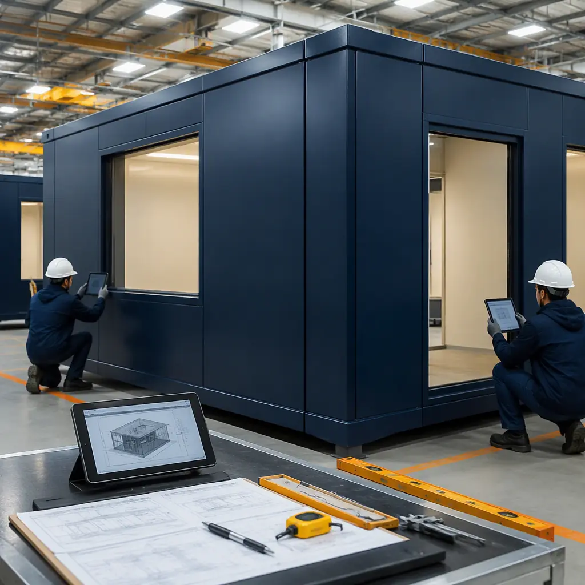
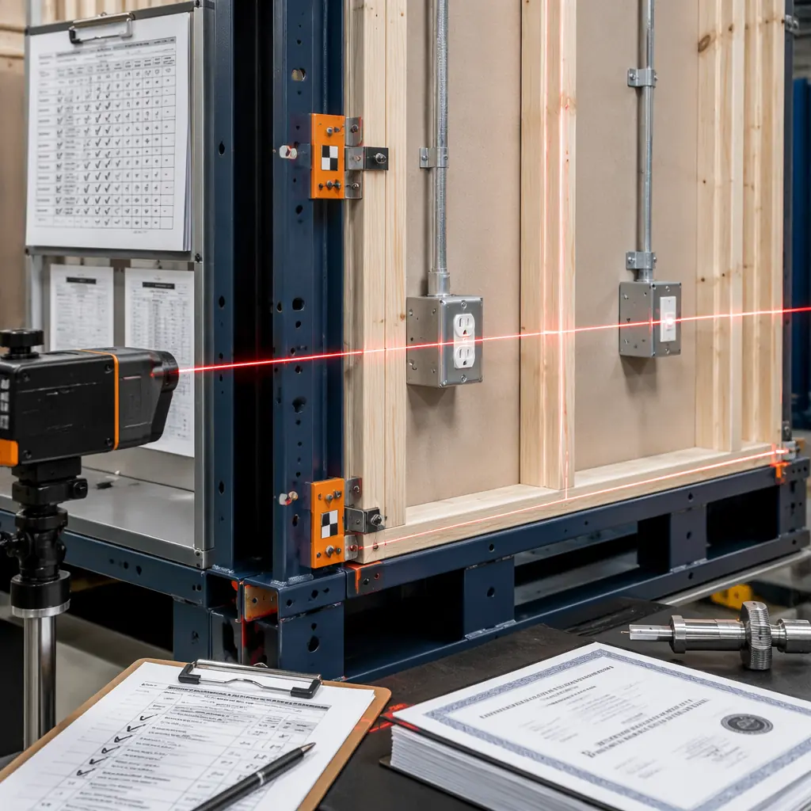
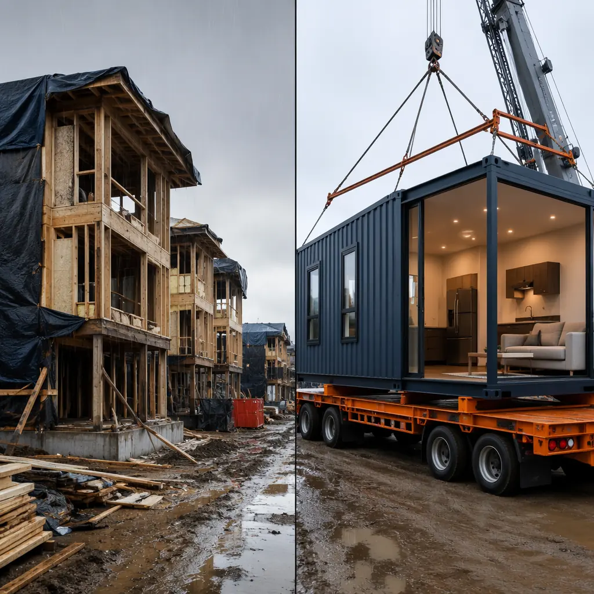
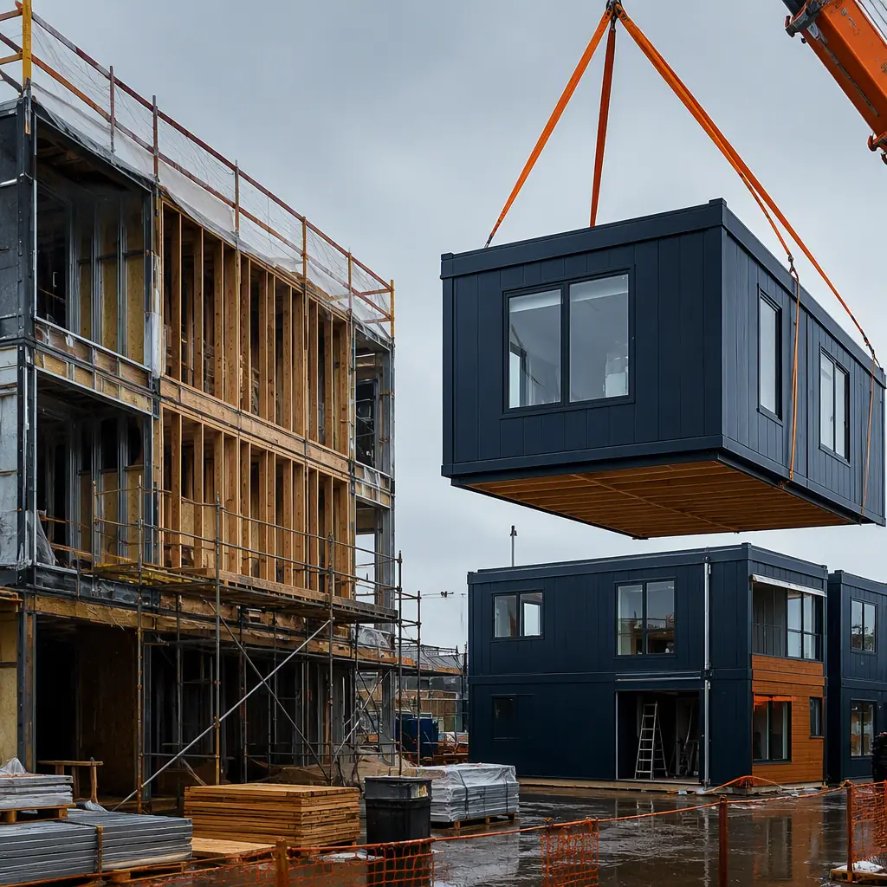

Construction quality is not an abstract virtue — it is a financial variable that compounds across every phase of a project's lifecycle. Defects discovered during construction trigger rework that consumes schedule and budget. Defects discovered after handover generate warranty claims, reputation damage, and litigation exposure. The difference between a project delivered with 12 defects per unit and one delivered with 3 defects per unit is not marginal — it can swing project profitability by 4–7% of total contract value, according to the Construction Industry Institute's 2025 benchmark study of 340 commercial projects. Modular construction's factory-controlled production environment fundamentally changes the defect generation rate, the inspection regime, and the rework cost structure compared to site-built construction. This article presents the data that developers need to evaluate the quality ROI of modular versus traditional methods — not marketing claims, but independently verifiable defect rates, rework costs, and third-party inspection pass rates.

Why Construction Quality Is a Factory Problem, Not a Site Problem
The construction industry's quality challenge is fundamentally a production environment problem. Site-built construction takes place outdoors, in variable weather conditions, with a rotating cast of subcontractors who may visit the site for 3–8 weeks and never return. Each subcontractor is incentivized to complete their scope quickly and move to the next project — not to ensure that their work integrates perfectly with the next trade. The drywall contractor who leaves a 3mm gap at the floor edge has no financial stake in the baseboard installation that will reveal that gap 6 weeks later. The quality control chain in traditional construction is fractured across 20–40 separate trade contractors, each with their own definition of "acceptable."
Modular construction shifts 70–80% of construction activity into a factory where the production environment is controlled, the workforce is permanent, and the quality assurance system is singular and integrated. The same team that installs wall framing also installs the drywall, MEP rough-in, and interior finishes — on the same module, in the same factory, under a single quality management system. This vertical integration of trades within a controlled environment is the structural reason modular construction produces fewer defects, not because factory workers are more skilled than site workers (they draw from the same labor pool), but because the factory production system is designed for quality consistency in ways that a construction site inherently cannot be.
The distinction matters for developers evaluating modular construction: the quality advantage is not a claims-based differentiator that depends on which manufacturer you select — it is a structural advantage of the production method itself, documented across the industry by independent researchers. Our modular vs traditional construction comparison covers the full spectrum of how the two methods differ across cost, schedule, and performance dimensions.

Defect Rates: The Data Behind Factory Precision
The most comprehensive dataset comparing modular and site-built construction defect rates comes from a 2024 study by the Modular Building Institute (MBI) and the National Institute of Building Sciences, which analyzed 1,200 modular projects and 2,800 comparable site-built projects across North America. The study measured defects at three points: during construction (pre-drywall inspection), at substantial completion (punch list), and at 12-month warranty walkthrough. The results are striking:
| Quality Metric | Site-Built Construction | Factory-Built Modular | Improvement |
|---|---|---|---|
| Defects per 1,000 sq ft (pre-drywall inspection) | 8.2 | 2.4 | 71% fewer |
| Punch list items per unit (substantial completion) | 18.6 | 5.2 | 72% fewer |
| 12-month warranty defect rate (per unit) | 4.8 | 1.1 | 77% fewer |
| First-time inspection pass rate (structural/MEP) | 62% | 94% | 52% higher |
| Third-party inspection non-conformance rate | 14.3% | 3.8% | 73% lower |
| Rework as % of total construction labor hours | 12.4% | 4.6% | 63% less rework |
The consistency of the improvement — 63–77% reduction across five independent quality metrics — points to a structural rather than situational cause. Modular construction is not producing marginally better quality; it is producing categorically different quality outcomes. The most significant figure for developers is the 12-month warranty defect rate: site-built projects average nearly 5 post-occupancy defects per unit requiring contractor callbacks, while modular projects average just over 1. Each callback represents not just the direct repair cost but the operational disruption to tenants, the administrative burden on property management, and the incremental erosion of the developer's reputation with owners and investors.

Rework Costs: The Hidden Line Item That Destroys Margins
Rework — the cost of correcting work that was done incorrectly the first time — is the construction industry's most expensive form of waste. The Construction Industry Institute's 2025 benchmark study found that rework consumes 12.4% of total construction labor hours on traditional site-built projects, translating to 5–8% of total project cost. On a $25 million apartment building, that's $1.25–2.0 million spent on fixing mistakes — money that generates zero additional building value and directly reduces project margin.
The cost structure of rework differs fundamentally between site-built and modular construction:
- Detection timing. In site-built construction, defects are discovered reactively — when the next trade arrives and finds that the previous trade's work prevents their installation. Each discovery triggers a cascade: stop work, notify the GC, the GC notifies the subcontractor, the subcontractor schedules a crew (often 3–7 days later), the crew fixes the defect, and the affected trade resumes work. In modular construction, QC inspections occur at defined stations along the assembly line and defects are corrected within hours, by the same team. Our factory quality control systems guide details the inspection checkpoints and digital documentation that enable this rapid cycle.
- Correction cost. A defect discovered 10 minutes after it occurred on a factory assembly line costs the direct labor to fix it — perhaps $50–150. The same defect discovered 3 weeks later on a construction site, after subsequent trades have built over it, costs $500–3,000 in demolition, repair, and re-coordination of affected trades. The cost multiplier is 10–20x, driven entirely by the time lag between defect creation and defect discovery.
- Trade coordination rework. The most expensive category of rework in traditional construction is trade coordination conflicts — structural steel colliding with mechanical ducts, plumbing risers conflicting with electrical panels, fire sprinkler piping routed through door openings. These conflicts account for 35–40% of all rework costs on commercial projects and are entirely preventable through BIM clash detection. Modular construction's BIM-to-factory workflow resolves these conflicts in the digital model before any physical work begins, eliminating this category of rework entirely.
McGraw Hill's 2025 modular construction study found that modular projects averaged 4.6% of labor hours spent on rework versus 12.4% for site-built — a 63% reduction. For a 60,000 sq ft building with $14 million in hard construction costs, the rework savings alone contribute approximately $450,000–650,000 to the project's bottom line. This is a quality dividend that flows directly to developer returns, and it compounds when combined with the change order reduction documented in our modular construction change order management guide.
Weather Impact on Construction Quality
Construction quality is significantly influenced by weather exposure — a variable that modular construction largely eliminates. Lumber exposed to rain for weeks before a building is dried-in shrinks as it dries, creating gaps at drywall joints and nail pops in finished surfaces. Drywall subjected to humidity cycles produces visible seam cracking within 12–18 months of occupancy. In modular construction, structural framing, sheathing, MEP rough-in, drywall, and finishes are all installed inside the factory — the module is weather-tight before it leaves the production line.
Equally important is the schedule-pressure effect. When a 24-month site-built project loses 8 weeks to winter delays, the GC faces a choice: extend the schedule or compress remaining work by reducing quality control rigor. The financial pressure to compress is overwhelming. Modular construction's factory production is completely weather-independent, and the site schedule is compressed to 4–8 weeks — making it far easier to find weather windows for the limited weather-exposed work.

Punch List Statistics: What Happens at Handover
The punch list — the inventory of incomplete or defective items compiled during the pre-handover walkthrough — is the most visible quality metric for developers. It is the moment when construction quality becomes tangible: every item on the list represents something the developer paid for but did not receive in acceptable condition. Site-built commercial projects average 18.6 punch list items per unit at substantial completion, according to the MBI/NIBS dataset. Modular projects average 5.2 items per unit — a 72% reduction.
The composition of punch list items also differs qualitatively. Site-built punch lists are dominated by finish defects: uneven drywall joints, paint overspray on trim, misaligned cabinet doors, caulk failures at tub surrounds. Modular construction's integrated production sequence — where the same team installs framing, drywall, paint, trim, and flooring on the same module — eliminates the handoff gaps that generate finish defects. Modular punch lists are dominated by site-installed scope items: exterior caulking at module joints, utility connections, landscaping — items unrelated to building quality.
For a 120-unit apartment building, the 18.6 site-built items per unit generates a 2,232-item punch list requiring 4–6 weeks of full-time management attention. A modular building's 5.2 items per unit produces a 624-item punch list resolved in 1–2 weeks. The 3–4 weeks of compressed punch list duration translates directly to earlier certificate of occupancy and earlier revenue — approximately $135,000 in incremental Year 1 revenue for a building with $180,000/month projected rent. Our modular building commissioning and handover guide describes the protocols that enable this accelerated handover.
Third-Party Inspection and Code Compliance
Modular construction's quality advantage extends beyond the building itself to the regulatory compliance process. In most jurisdictions, modular buildings are subject to two inspection regimes: in-factory inspection by third-party agencies approved by the state or province (typically NTA, ICC-ES, or TÜV for international projects), and on-site inspection by local building officials for foundation, module setting, and utility connections. This dual-inspection model creates a more rigorous compliance framework than site-built construction, which typically relies solely on periodic local building department inspections.
The in-factory third-party inspection is continuous rather than periodic. Inspectors are stationed at the factory full-time during production, observing every module at every production stage rather than sampling completed work during scheduled visits. This continuous inspection model — combined with the factory's own QA/QC system — produces the 94% first-time inspection pass rate documented in the MBI dataset, versus 62% for site-built projects undergoing periodic municipal inspection. The difference is not that modular builders are more compliant with building codes — it is that the inspection regime catches non-compliance earlier, when it is cheap to fix, rather than during a scheduled inspection visit that may occur weeks after the non-compliant work was concealed behind subsequent layers of construction.
For developers, the practical implication is reduced compliance risk. A failed site-built inspection at week 16 can stop the project for 1–3 weeks while non-compliant work is uncovered, corrected, and re-inspected. A failed in-factory modular inspection at production station 4 catches the issue before the module advances to station 5, with correction completed within hours. The compliance cost difference between these two scenarios is measured in tens of thousands of dollars per incident. Our modular construction insurance and risk management guide explains how this compliance profile translates to lower builder's risk premiums.
Quality ROI: What the Data Means for Developer Returns
The quality metrics documented above are not abstract performance indicators — they translate directly to financial outcomes that developers can model in their project pro formas. Using the benchmark data from the MBI/NIBS study and MODURA's internal project data across 500+ completed projects, the quality-driven financial impact for a representative 60,000 sq ft, 4-story mixed-use building breaks down as follows:
| Quality-Driven Cost/Savings Category | Site-Built (Baseline) | Factory-Built Modular | Impact |
|---|---|---|---|
| Rework costs (% of hard cost) | 6–8% ($840K–$1.12M) | 2–3% ($300K–$450K) | −$540K to −$670K |
| Warranty callback reserve (first 12 months) | 1.5–2.0% of contract ($210K–$300K) | 0.3–0.5% ($45K–$75K) | −$165K to −$225K |
| Punch list resolution duration (post-SC) | 4–6 weeks | 1–2 weeks | 3–4 weeks earlier occupancy |
| Accelerated revenue (3 weeks × $180K/month) | — | +$135,000 | +$135K revenue |
| Weather delay contingency (schedule reserve) | 8–12 weeks | 1–2 weeks | 6–10 weeks schedule reduction |
| Total quality-driven financial impact | Baseline | Net improvement | $840K–$1.03M favorable |
The quality-driven financial impact of $840,000–$1.03 million on a $14 million project represents a 6–7.4% improvement in project economics — a figure that exceeds the typical modular-versus-traditional hard cost premium of 3–5%. In other words, the quality dividend alone can fully offset and exceed the per-square-foot cost differential between modular and site-built construction, before accounting for schedule acceleration, financing savings, and change order reduction. Developers who evaluate modular construction solely on the hard-cost line item are leaving 6–7% of project value on the table — value that comes from building it right the first time. Our modular construction ROI developer's guide provides a complete framework for modeling the total project economics, including the quality variables detailed in this article.
Selecting a Modular Partner: Quality Due Diligence Checklist
Not all modular manufacturers deliver the quality outcomes documented in the industry benchmark data. The quality advantage of modular construction is structural — it emerges from the factory production model itself — but it is realized only when the manufacturer has invested in the quality systems, inspection protocols, and workforce training that the production model enables. Developers evaluating modular partners should assess the following quality indicators:
- Third-party inspection agency and scope. Which agency provides in-factory inspection (NTA, ICC-ES, TÜV)? Is the inspector stationed full-time during production, or on a periodic visit schedule? Full-time third-party inspection is the single strongest indicator of quality commitment.
- Digital QA/QC documentation. Does the manufacturer maintain a digital quality record for each module — including inspection checklists, test results (plumbing pressure tests, electrical continuity, insulation values), and photographic documentation at each production stage? Digital documentation provides the audit trail that supports warranty claims, insurance underwriting, and lender due diligence. MODURA's factory QC systems, detailed in our offsite quality control practices guide, provide a model for what comprehensive digital QA/QC looks like.
- Punch list historical data. Ask for the manufacturer's average punch list items per unit at substantial completion for projects comparable to yours. If they cannot provide this data — or if the number is above 8 items per unit — their quality systems may not be delivering the industry benchmark.
- Warranty claim rate. The 12-month warranty defect rate is the ultimate quality metric. Request data on warranty claims per unit for projects completed in the last 3 years. Industry benchmark for modular is 1.1 items per unit; anything above 2.5 suggests quality system weaknesses.
- BIM-to-factory integration. Does the manufacturer's production workflow begin with a federated BIM model that drives CNC fabrication equipment directly? Or does the factory rely on 2D drawings interpreted by production workers? Direct BIM-to-CNC integration eliminates the interpretation errors that generate a significant portion of rework in less digitally mature factories.
These five quality indicators, combined with the financial and operational due diligence covered in our modular construction partner evaluation guide, provide a comprehensive framework for distinguishing manufacturers who deliver on the quality promise of modular construction from those who simply operate a factory without the systems to match.
The quality case for modular construction is not a marketing argument — it is a financial argument backed by independently collected data. Developers who treat quality as a soft benefit will miss the 6–7% of project value that quality delivers. Developers who model quality as a hard financial variable will find that modular construction's quality dividend alone justifies the decision.